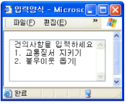
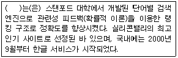
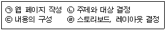
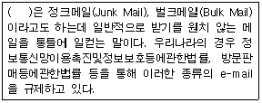
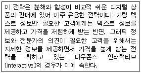
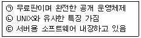
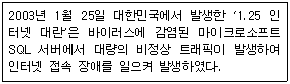

전자상거래운용사 (2006-04-30 기출문제)
1과목: 인터넷 일반
1. 다음 중 IAB(Internet Architecture Board)의 산하 위원회로서 인터넷의 새로운 기술을 제시하고, 인터넷 표준안을 제안하기 위한 역할을 담당하고 있는 기구는?
- InterNIC(Network Information Center)
- ISOC(Internet SOCiety)
- IEEE(Institute of Electrical and Electronics Engineers)
- IETF(Internet Engineering Task Force)
(정답률: 알수없음)

2. 다음 중 아웃룩 익스프레스의 기능과 가장 거리가 먼 것은?
- 편지 수신
- 뉴스그룹 검색
- 주소록 관리
- 인터넷 방송
(정답률: 알수없음)
3. 아래 ＜보기＞의 입력 양식폼에서 사용되는 태그로 옳은 것은?

- ＜SELECT＞
- ＜OPTION＞
- ＜INPUT＞
- ＜TEXTAREA＞
(정답률: 알수없음)
4. 다음 중 인터넷을 사용할 때 지켜야 하는 네티켓이라고 보기에 가장 거리가 먼 것은?
- 대화방에서는 서로의 인격을 존중해주는 언어를 사용한다.
- 게시판 등에 글을 올릴 때에는 자신의 글을 읽는 사람들이 너무 오랜 시간을 빼앗기지 않도록 배려한다.
- 다른 사람들이 실수를 할 때는 즉시 지적하여 정정하도록 한다.
- 서로 볼 수 없는 가상공간이라고 해도, 잘못된 언어를 사용하는 것은 자제한다.
(정답률: 알수없음)
5. ASP에 대한 설명 중 옳지 않은 것은?
- ASP는 VBScript, Javascript와 같은 스크립트언어를 사용하며 재사용가능한 ActiveX 서버 컴포넌트 등을 HTML과 결합하여 사용할 수 있다.
- ASP 파일의 확장자는 .html이아니라 .asp 이다.
- ASP의 VBScript와 Javacript 두 가지를 동시에 사용할 수 있으며, 한 가지를 사용할 때와 성능이 똑같다.
- 웹브라우저는 ASP파일을 요청하며, 서버에서 ASP 파일이 호출되면 해당 파일을 처리하여 HTML웹 페이지 형식으로 변환하여 브라우저로 전송한다.
(정답률: 알수없음)
6. 다음 중 자바스크립트에 관한 설명으로 가장 옳지 않은 것은?
- 자바 스크립트는 객체기반 스크립트 언어이다.
- 자바 스크립트의 소스는 공개될 수 있다.
- 자바 스크립트 언어는 클라이언트 사이드 스크립트 언어이다.
- 자바 스크립트 언어는 컴파일 방식에 의하여 수행된다.
(정답률: 알수없음)
7. 다음 중 스팸메일의 영향과 가장 거리가 먼 것은?
- 시간 낭비
- 생산성 향상
- 바이러스 감염
- 정신적 불쾌감
(정답률: 알수없음)
8. ADSL 서비스에 대한 다음 설명 중 옳지 않은 것은?
- ADSL은 전화국과 각 가정이 1:1로 연결된다.
- 전화국에서 사용자까지 내려가는 하향이나 그 반대인 상향이나 모두 같은 속도로 통신한다.
- 최대 장점은 전화선이나 전화기를 그대로 사용하면서도 고속 데이터 통신이 가능하다는 점이다.
- 단점은 쌍방향 서비스로 이루어지는 원격진료나 원격 교육 같은 서비스에서는 효율이 떨어진다는 점이다.
(정답률: 알수없음)
9. 정보통신윤리위원회(ICEC; Information Communication Ethics Committee)의 심의규정에 명시되어 있는 심의기본원칙에 해당되지 않는 것은?
- 최소 규제의 원칙
- 공정성 및 객관성의 원칙
- 비밀보호의 원칙
- 최신성 및 다양성의 원칙
(정답률: 알수없음)
10. 나모 웹에디터나 드림위버 등과 같은 도구에서 홈페이지 제작을 체계적으로 관리하여, 문서의 수정, 추가, 삭제 등을 손쉽게 할 수 있도록 해주는 기능은?
- 사이트
- 타임라인
- 팔레트
- 클립아트
(정답률: 알수없음)
11. HTML의 테이블 태그에 대한 설명으로 옳지 않은 것은?
- ＜TD＞ :＜TABLE＞ 태그 안에서 지정하며 표 내부의 각각의 셀을 작성할 때 사용한다.
- ＜TR＞ :＜TABLE＞ 태그 내에서 사용하며 행을 바꿀 때 사용한다.
- ＜TH＞ :＜TABLE＞ 태그 내에서 표의 셀 제목을 지정할 때 사용한다.
- ＜CAPTION＞ :＜TABLE＞ 태그 내에서 표의 여백을 지정할 때 사용한다.
(정답률: 알수없음)
12. 다음의 태그는 링크를 위한 태그의 종류이다. 이중 Yahoo 사이트 또는 Yahoo 관련자와 연결이 되지 않는 태그는?
- ＜A HREF="http://www.yahoo.com"＞ 야후 ＜/A＞
- ＜A HREF="http://www.yahoo.com"＞＜IMG SRC= "yahoo.jpg"＞＜/A＞
- ＜A HREF="mailto:webmaster@yahoo.com"＞ 메일 ＜/A＞
- ＜A HREF="#yahoo"＞ yahoo＜/A＞
(정답률: 알수없음)
13. 다음 중 SQL 데이터 조작문에서 데이터를 검색하는 명령어는?
- SEARCH
- SELECT
- VIEW
- UPDATE
(정답률: 알수없음)
14. 다음 중 아래 ＜보기＞가 설명하는 검색엔진은?

- 야후(Yahoo)
- 알타비스타(AltaVista)
- 구글(Google)
- 애스크 지브스(AskJeeves)
(정답률: 알수없음)
15. 유즈넷 뉴스그룹 상에 올려진 글들을 관리하기 위해 컴퓨터들에 의해 사용되는 프로토콜을 무엇이라 하는가?
- SMTP
- POP
- MIME
- NNTP
(정답률: 알수없음)
16. 스크립트(Script) 언어에 관한 설명 중 가장 옳지 않은 것은?
- PHP는 클라이언트 사이드 스크립트 언어이다.
- JavaScript , VBScript , PHP, ASP등이 있다
- 스크립트 언어는 기본적으로 인터프리터형 언어를 의미하지만 컴파일이 필요한 스크립트 언어도 있다.
- JavaScript는 초기에 넷스케이프사에서 개발하였다
(정답률: 알수없음)
17. 국내 검색엔진인 심마니 관련 자료를 찾으려는데, 심마니의 철자가 "simmani"인지 "simmany"인지 확실하지 않다. 검색어를 지정하는 방법으로 옳은 것은?
- simmani OR simmany
- simmani AND simmany
- simmani NEAR simmany
- simmani NOT simmany
(정답률: 알수없음)
18. 다음 중 태그 문서에 대한 설명으로 옳은 것은?
- 태그는 대소문자를 구별한다.
- 태그의 형식이 ＜TAG＞ ~＜/TAG＞일 경우 다른 태그 구조와 겹쳐도 된다.
- HTML에서는 줄바꿈이 인식된다.
- HTML에서는 많은 여백이 있을 경우, 하나의 공백만으로 인식한다.
(정답률: 알수없음)
19. 다음 중 예시된 SQL 데이터 조작문 중에서 구조가 가장 옳지 않은 것은?
- Select * from goods where price＞ 100000
- Insert goods into (price) values (10000)
- Delete from goods where price = 100000
- Update goods set price = 100000 where price＞ 100000
(정답률: 60%)
20. 아래의 ＜보기＞는 웹페이지를 개발할 때 필요한 단계들이다. 다음 중 웹페이지 개발 순서로 가장 적절한 것은?

- (ㄷ)→(ㄴ)→(ㄹ)→(ㄱ)
- (ㄴ)→(ㄷ)→(ㄹ)→(ㄱ)
- (ㄷ)→(ㄹ)→(ㄴ)→(ㄱ)
- (ㄹ)→(ㄷ)→(ㄴ)→(ㄱ)
(정답률: 알수없음)
2과목: 전자상거래 일반
21. 다음 중 인터넷이 기업 경영에 제공하는 기회 요인으로 보기 어려운 것은?
- 고객과의 통신(Communication) 비용 감소
- 고객정보 파악의 용이
- 고객의 이전비용(Switching Cost) 하락
- 고객서비스의 향상
(정답률: 알수없음)
22. 재고 관리에 대한 다음 설명 중 가장 적절하지 않은 것은?
- 같은 조건 하에서는 일회 주문비용이 높을수록 주문횟수를 줄이는 것이 바람직하다.
- 같은 조건 하에서는 수요가 많은 품목일수록 자주 주문하는 것이 바람직하다.
- 같은 조건 하에서 재고고갈의 확률을 낮추기 위해서는 안전재고 수준을 높게 잡는 것이 바람직하다.
- 같은 조건 하에서는 고가의 품목일수록 주문 횟수를 줄이는 것이 바람직하다.
(정답률: 알수없음)
23. 충동구매형 사용자를 공략하기 위해 배려해야 할 것으로 다음 중 가장 적절한 것은?
- 메인 페이지의 색상 선정
- 항해 구조
- 추천 상품
- 제품에 대한 자세한 정보
(정답률: 알수없음)
24. 전자조달, e-Marketplace 등은 어떤 유형의 전자상거래라고 할 수 있는가?
- B2B
- B2C
- P2P
- G2C
(정답률: 알수없음)
25. 다음 중 물리적 상품과 구별되는 디지털 상품의 특성으로 가장 옳지 않은 것은?
- 무형성
- 재생산 용이성
- 재생산 시 낮은 변동비용
- 초기생산 시 낮은 고정비용
(정답률: 알수없음)
26. 다음 물류의 원칙 중 7R에 포함되지 않는 것이 들어간 것은?
- 적절한 상품, 적절한 품질, 적절한 양
- 적절한 상품, 적절한 시기, 적절한 장소
- 적절한 상품, 적절한 가격, 적절한 인상
- 적절한 상품, 적절한 비용, 적절한 운반수단
(정답률: 알수없음)
27. 다음 중 아래 ＜보기＞의 괄호 안에 들어갈 적절한 용어는?

- 카드메일(Card Mail)
- 스네일메일(Snail Mail)
- 스팸메일(Spam Mail)
- 뉴스메일(News Mail)
(정답률: 알수없음)
28. 다음 중 M-Commerce 응용 서비스의 특징으로 가장 거리가 먼 것은?
- 개인화된 서비스
- 즉시성 서비스
- 위치정보 결합서비스
- 저렴한 정보제공 서비스
(정답률: 알수없음)
29. 전자화폐의 전제조건으로 가장 거리가 먼 것은?
- 전자화폐는 보유자가 누구인지를 파악할 수 있어야 한다.
- 전자화폐는 화폐가치를 보유하여야 한다.
- 전자화폐는 가치를 저장하고 조회할 수 있어야 한다.
- 전자화폐는 거래시 쉽게 복사되거나 훼손되어서는 안된다.
(정답률: 알수없음)
30. 다음 중 전자상거래에 대한 설명으로 가장 거리가 먼 것은?
- 종이로 된 문서를 사용하지 않고 EDI, 전자우편, 전자 게시판, 팩스, 전자 자금 이체 등과 같은 정보 기술을 이용한 상거래
- 거래의 내용이 정보중심으로, 거래의 정황이 전자적 화면상에서, 그리고 거래의 하부구조가 컴퓨터와 통신으로 바뀌는 것
- 재화나 용역의 거래에 있어 전부 또는 일부가 전자문서 교환 등 전자적 방식에 따라 처리되는 거래
- 기업의 개별 업무 영역을 통합적으로 연계 관리함으로써 기업이 보유하고 있는 제한된 자원을 전사적으로 관리하는 것
(정답률: 알수없음)
31. 다음 택배 물류 정보시스템 중에서 이동위치 추적 시스템을 이용하여 차량의 위치를 찾아내어 운행관리 센터에서 항상 파악해두는 시스템으로 가장 적합한 것은?
- AVM(Automatic Vehicle Monitoring)
- LMR(Land Mobile Radio)
- MCA(Multiple Channel Access)
- JIT(Just in Time)
(정답률: 알수없음)
32. 다음 중 구매자 관점에서 전자상거래의 장점으로 보기 가장 거리가 먼 것은?
- 시간적, 공간적 제약을 극복하여 언제 어디서나 상품 구입이 가능하다.
- 구매의사 결정 과정에서 다양한 상품 정보를 확보 할 수 있어 합리적인 구매의사 결정을 할 수 있다.
- 유통 단계의 단축으로 상대적으로 저렴한 가격으로 구매할 수 있다.
- 계획에서 벗어난 과다한 구매를 할 가능성이 상대적으로 높다.
(정답률: 알수없음)
33. 다음 중 인터넷 마케팅에서 고객 차별화에 논리적 설명을 제공해 주는 '20 대 80의 법칙'을 가장 옳게 설명한 것은?
- 기업의 직원 20명이 고객 80명을 전담하도록 한다.
- 기업매출의 20%는 우량한 고객 80%가 충당해 준다.
- 기업매출의 80%는 우량한 고객 20%가 충당해 준다.
- 마케팅 비용의 20%를 고객에게 사용하면 80%의 매출 상승 효과가 있다.
(정답률: 알수없음)
34. 다음은 전통적인 상거래에 대한 전자상거래의 특징을 설명한 것이다. 가장 적절하지 못한 것은?
- 많은 고객을 대상으로 하므로 기업간 경쟁이 약화된다.
- 고객이 많은 정보를 보유하므로 판매자의 교섭력이 약화된다.
- 실제 상품이 아닌 상품에 대한 정보를 통해 거래하게 된다.
- 직접적인 접촉이 없는 비대면적 거래이다.
(정답률: 알수없음)
35. 쿠키(Cookie)에 대한 설명으로 가장 옳은 것은?
- 쿠키는 인터넷 이용자가 웹사이트를 방문할 때 자동으로 웹 서버에 저장된다.
- 클라이언트 측에서는 쿠키 파일을 제거할 수 없기 때문에 개인의 프라이버시 침해를 막을 수 없다.
- 쿠키는 인터넷 사용자가 웹사이트에서 어떤 페이지에서 어떤 페이지로 이동했는지를 파악할 수 있게 해준다.
- 저장되는 쿠키 파일의 크기는 보통 10K 바이트 이상이다.
(정답률: 알수없음)
36. 다음 중 인터넷 마케팅에서 사용되는 마케팅 기법으로 보기 어려운 것은?
- 데이터베이스 마케팅 (Database Marketing)
- 인터액티브 광고 (Interactive Advertising)
- 매스 마케팅 (Mass Marketing)
- 온라인 마케팅 조사 (Online Marketing Research)
(정답률: 알수없음)
37. 다음 중 소비자의 보호를 위해 사이버 몰에 명시하여야 하는 사항으로 가장 거리가 먼 것은?
- 상호명과 대표자 성명
- 영업신고필증과 기타 영업관련 자격
- 대표자의 주민등록번호
- 전화번호, FAX번호, 전자우편 주소
(정답률: 알수없음)
38. 아래의 ＜보기＞는 인터넷의 장점을 활용한 판매촉진전략 중 어떠한 전략에 대한 설명인가?

- 버저닝(versioning) 전략
- 무료제공(give away) 전략
- 시장 개발 전략
- 무료 메일 제공 전략
(정답률: 59%)
39. 다음 중 인터넷 광고 측정 모델에 대한 설명으로 가장 옳지 않게 연결된 것은?
- CPM - 1000명당 노출되는데 소요되는 광고비용
- CPC - 광고를 통해 1달러의 매출을 성사시키는데 소요되는 광고비용
- CPL - 광고를 통해 방문한 고객이 구매 의사를 표시하는데 까지 소요되는 비용
- CPT - 실제로 거래 또는 판매가 이루어지는 데까지 소요되는 비용
(정답률: 알수없음)
40. 다음 중 e-비즈니스와 관련된 용어에 대한 설명이 옳지 않은 것은?
- Portal - 통상적으로 인터넷에 접속했을 때 제일 먼저 접하는 사이트로서, 목적하는 사이트로 안내하는 관문의 역할을 한다.
- Hub - 중앙의 운영사이트를 중심으로 여러 개의 전자상거래 사이트가 연합하고 있는 사이트 연합체
- Votal - 특정 분야의 정보를 심도있게 제공하는 사이트
- MRO - 고가의 하드웨어나 소프트웨어를 임대하는 사업
(정답률: 알수없음)
3과목: 컴퓨터 및 통신 일반
41. 다음 중 HTTP 대한 설명으로 옳지 않은 것은?
- 웹상에서 서버와 클라이언트 브라우저간의 하이퍼텍스트 문서를 전송하는 프로토콜이다.
- HTTP를 전송 프로토콜로 사용하기 위해서는 URL을 "http://"로 시작해야 한다.
- HTTP의 입장에서의 웹 브라우저는 서버로써 역할을 수행한다.
- 웹 서버는 모두 HTTP 데몬을 가지고 있으며, 이 프로그램은 HTTP 요청을 기다리고 있다가 요청이 들어오면 그것을 처리하도록 설계되어 있다.
(정답률: 알수없음)
42. 다음 중 아래의 ＜보기＞와 같은 특징을 모두 갖는 운영체제는 무엇인가?

- Windows XP
- Window 2000
- Mac OS
- LINUX
(정답률: 알수없음)
43. 윈도우즈 2000 시스템에서 현재 공유되고 있는 모든 리소스를 보여주는 명령은?
- net share
- ipconfig share
- file share
- netstat share
(정답률: 알수없음)
44. 다음 중 IPv6 인터넷 프로토콜과 IPv4 인터넷 프로토콜의 구조와 특징을 설명한 것으로 가장 옳지 않은 것은?
- IPv6는 IPv4에 비하여 확장된 주소공간을 가진다.
- IPv6는 IPv4에 비하여 복잡한 헤더구조를 가진다.
- IPv6는 IPv4에 비하여 강화된 인증 및 보안기능을 제공한다.
- IPv6는 IPv4에 비하여 직접 내장된 QOS 기능으로 멀티미디어 전송시 안정적이다.
(정답률: 알수없음)
45. URL의 표현방법을 바르게 표시하고 있는 것은?
- 프로토콜://도메인이름:포트번호/디렉토리경로/파일이름
- 프로토콜://도메인이름:디렉토리경로/파일이름/포트번호
- 프로토콜://포트번호:도메인이름/디렉토리경로/파일이름
- 프로토콜://도메인이름/파일이름:포트번호/디렉토리경로
(정답률: 알수없음)
46. 컴퓨터 시스템의 5대 구성요소가 바르게 나열된 것은 어느 것인가?
- 입력장치, 중앙처리장치, 주기억장치, 보조기억장치, 출력장치
- 입력장치, 중앙처리장치, 키보드, 모니터, 본체
- 본체, 모니터, 키보드, 중앙처리장치, 보조기억장치
- 중앙처리장치, 본체, 모니터, 보조기억장치, 출력장치
(정답률: 알수없음)
47. 다음 중 CDMA 이동통신 시스템에 관한 설명으로 가장 옳지 않은 것은?
- CDMA는 코드 분할 방식을 사용한다.
- 디지털 셀룰러 전송 시스템의 하나이다.
- CDMA기술은 국제표준으로 미국의 이동통신이 모두 이 방법으로 사용된다.
- CDMA의 기술을 가진 대표적인 회사는 미국의 퀄컴(Qualcomm)사이다.
(정답률: 알수없음)
48. 다음 중 아래 ＜보기＞와 가장 관련이 있는 바이러스는?

- 님다 바이러스
- 슬래머 웜 바이러스
- 미메일(Mimail) 바이러스
- CIH 바이러스
(정답률: 알수없음)
49. 다음 중 CPU가 하나의 명령어를 수행하는 기계사이클 (Machine Cycle)의 수행 순서로 가장 옳게 나열된 것은?
- 호출 - 해독 - 실행 - 저장
- 해독 - 실행 - 호출 - 저장
- 저장 - 실행 - 해독 - 호출
- 호출 - 저장 - 실행 - 해독
(정답률: 알수없음)
50. 다음 중 클라이언트와 서버의 관계를 설명한 내용으로 가장 옳은 것은?
- 클라이언트는 서비스 제공자로, 서버는 서비스 요구자의 형태로 이들간에 네트워크를 통하여 자원을 공유한다.
- 분산처리기법의 하나이다.
- 클라이언트와 서버는 둘 다 서버기능을 갖는 컴퓨터이어야만 한다.
- 자료처리는 클라이언트와 서버 중 반드시 서버에서만 이루어짐을 뜻한다.
(정답률: 알수없음)
51. 다음 중 사설 네트워크에 불법 사용자들의 접근을 차단하고, 내부의 정보가 불법적으로 외부로 유출되는 것을 방지하기 위한 시스템 보안 기술은?
- 암호화 기술
- 전자서명
- 전자인증
- 방화벽 시스템
(정답률: 알수없음)
52. 다음 중 운영체제와 웹서버의 연결이 올바르지 않은 것은?
- 윈도2000서버 - 인터넷 인포에이션 서버(IIS)
- 윈도2000서버 - 아파치(Apache)
- 리눅스 - 인터넷 인포메이션 서버(IIS)
- 리눅스 - 아파치(Apache)
(정답률: 알수없음)
53. TCP/IP의 설계 목표와 가장 거리가 먼 것은?
- 훌륭한 실패 복구 기능
- 새로운 네트워크에 쉽게 플러그인
- 높은 오류 처리
- 최대한의 데이터 오버헤드
(정답률: 알수없음)
54. 80년대 중반 호주의 한 대학생에 의하여 아이디어가 제시되었고 1990년 IEEE 802.6으로 공표된 분산형 예약방식의 프로토콜로써 특히 MAN(Metropolitan Area Networks)용 국제표준안으로 채택하고 있는 프로토콜은?
- FDDI
- DQDB
- CSMA/CD
- ATM
(정답률: 알수없음)
55. 다음 중 프록시 서버에 대한 설명으로 가장 옳지 않은 것은?
- PC 사용자와 인터넷 사이에서 중개자 역할을 수행한다.
- 보안이나 관리적 차원의 규제 그리고 캐시 서비스 등을 제공한다.
- 파일을 가져오거나 전송하는 서비스를 제공한다.
- 네트웍을 외부의 침입으로부터 보호하는 방화벽 서버 등과 관련이 있다.
(정답률: 알수없음)
56. 다음 중 정보통신 관련 국제표준(International Standards)과 가장 거리가 먼 것은?
- 국제전기통신연합 - ITU(International Telecommunication Union)
- 국제표준화기구 - ISO(International Organization for Standardization)
- 국제전기기술위원회 - IEC(International Electronical Commission)
- 미국표준화기구 - ANSI(American National Standard Institute)
(정답률: 알수없음)
57. 다음 중 LAN과 LAN을 연결하는 역할을 담당하는 장치로서 모든 데이터가 가장 효율적인 경로를 통해 예정된 목적지로 전송되도록 보장하는 기능을 가진 장치는?
- 리피터 (Repeater)
- 브리지 (Bridge)
- 라우터 (Router)
- 모뎀 (Modem)
(정답률: 알수없음)
58. 무선 인터넷에서 사용되는 프로토콜이 아닌 것은?
- ME
- WML
- WAP
- i-mode
(정답률: 알수없음)
59. 다음 중 스파이웨어나 애드웨어의 일반적인 증상과 가장 거리가 먼 것은?
- 컴퓨터의 속도가 많이 느려졌다
- 인터넷 시작 페이지가 바뀌었다.
- 팝업광고가 수시로 생긴다.
- 컴퓨터가 부팅이 되지 않는다.
(정답률: 알수없음)
60. 다음 중 전자메일(e-mail) 서비스에서 서버와 서버간의 메시지 전송을 위한 프로토콜은?
- FTP (File Transfer Protocol)
- SMTP (Simple Mail Transfer Protocol)
- POP3 (Post Office Protocol 3)
- NMTP (Network Management Transfer Protocol)
(정답률: 알수없음)